مبانيك في صفحة واحدة
دورة الوحدة من الإطلاق إلى التسليم، الطبقات المشتركة، الأدوار، وأرقام محفظتكم المنشورة داخل المنصة — في صورة واحدة تغني عن قراءة الدليل كاملًا.
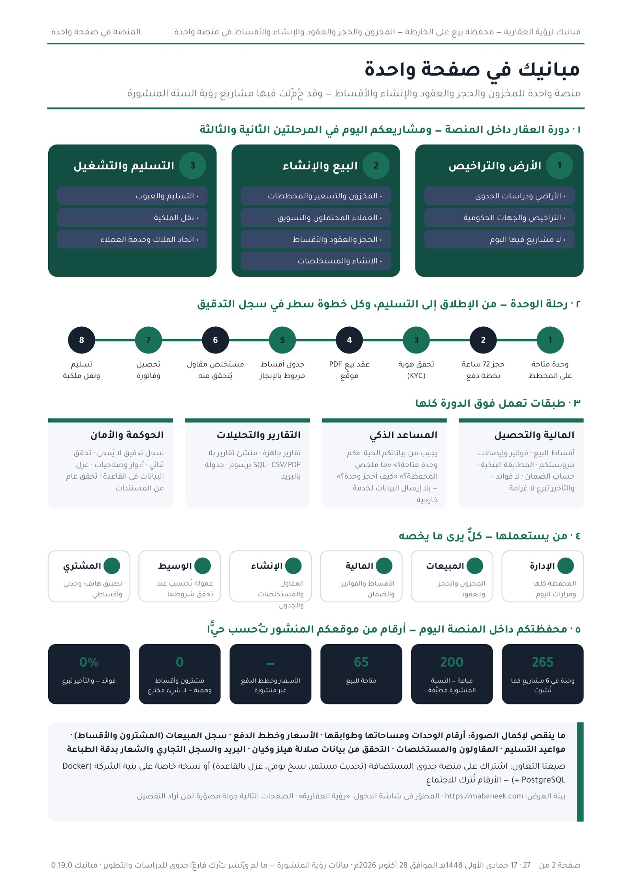
عن هذا الدليل
هذا الدليل يعرض منصة «مبانيك» — منصة التطوير العقاري من جدوى للدراسات والتطوير — وقد حُمِّلت فيها مشاريع رؤية للتطوير العقاري الستة كما نشرتموها على موقعكم viewom.com (صفحة «من نحن» وصفحات المشاريع)، وأُنشئ لكم فيها مطوّر باسم «رؤية العقارية» بشعاركم. محفظتكم محفظة بيع على الخارطة، فالدليل يركّز على ما يهمّ هذا النموذج: المخزون، والحجز، والعقود، والإنشاء، والأقساط.
- المحفظة داخل المنصة اليوم: 265 وحدة في 6 مشاريع في بركاء وصلالة والموالح وبوشر — مشروع مكتمل ومباع بالكامل (واجهة بركاء) وخمسة مشاريع في البيع والإنشاء؛ المتاح للبيع 65 وحدة.
- القاعدة التي التزمنا بها: ما لم يرد في موقعكم تُرك فارغًا لا مخترعًا — أرقام الوحدات والمساحات والأسعار وخطط الدفع ومواعيد التسليم وبيانات المشترين والمقاولين «غير مزوَّدة»، ولا يوجد في المنصة أي سعر أو مشترٍ أو قسط من عندنا.
- رموز الوحدات في الدليل (مثل SLH-A-05) رموز مؤقتة تحفظ مكان الوحدة ونوعها ريثما تصلنا أرقامكم الفعلية؛ وعدد المباع في كل مشروع هو النسبة المنشورة مطبَّقة على عدد الوحدات (بالتقريب)، وأي وحدة بعينها هي المباعة غير معلوم حتى يصلنا سجل المبيعات.
- «الحالة» على موقعكم (40٪، 10٪، 95٪…) قرأناها نسبة إنجاز إنشائي إلى أن تؤكدوا معناها؛ وتظهر في المنصة شريط الإنجاز لكل مشروع.
- الدليل في قسمين: الأول لقطات من المنصة على بياناتكم المنشورة؛ الثاني دورة البيع كاملة (الحجز ثم العقد ثم جدول الأقساط ثم المستخلصات) من بيئة العرض العامة ببيانات افتراضية لا تخصكم — كل لقطة منه موسومة بذلك — لأن بياناتكم لا تحوي بعدُ مشترين ولا أقساطًا.
لماذا الآن؟ ثلاث مشكلات يعيشها مطوّر يبيع على الخارطة
ستة مشاريع في أربع مناطق، ووحدات تُباع قبل أن تكتمل، ومشتريان يدفعون على مراحل — هذه طبيعة البيع على الخارطة، وهذه مشكلاتها حين تعيش في جداول متفرقة:
1. كم المتاح فعلًا؟
موقعكم ينشر نسبة المباع لكل مشروع (واجهة بركاء 100٪، فيوو جاردنس 99٪، صلالة هيلز وكيان 76٪، فيوو بازار 75٪، فيوو هايتس 20٪)، لكن الفريق يحتاج الخريطة: أي مكتب أو محل أو شقة بقي، وأيها محجوز لعميل ينتظر دفعته. المخزون الحي على مخطط واحد لكل مشروع يجيب في ثانية.
2. الحجز والعقد والأقساط في ثلاثة أماكن
الحجز في رسالة واتساب، والعقد في ملف، والأقساط في جدول إكسل، ودفعة العربون في كشف البنك. حين يُحجز مكتب في فيوو هايتس (37 وحدة متاحة) لا بد أن يمر بتحقق هوية ثم عقد موقَّع ثم جدول أقساط مربوط بمراحل البناء — في سجل واحد يراه الجميع.
3. الدفعات تتبع الإنجاز — فمن يقيس الإنجاز؟
البيع على الخارطة يعني أن دفعات المشتري ومستخلصات المقاول يجب أن تمشي مع نسبة إنجاز موثَّقة (فيوو هايتس 10٪، صلالة هيلز وكيان 40٪، فيوو جاردنس 70٪، فيوو بازار 95٪). الإنشاء والمستخلصات وحساب الضمان في شاشة واحدة تمنع صرف دفعة قبل التحقق من نسبتها.
مبانيك تضع الثلاثة في مكان واحد: وحدة على مخططها بحالتها، وحجز يتحول إلى عقد وجدول أقساط، وإنشاء يقيس الإنجاز قبل الصرف، وتقرير بترويستكم بضغطة.
المنصة في صفحة واحدة
تتبع المنصة دورة العقار الثلاثية (الأرض ⟵ البيع والإنشاء ⟵ التسليم والتشغيل)، ويعمل فوقها طبقتان مشتركتان: المالية والتحصيل، والحوكمة والتقارير. مشاريعكم اليوم موزَّعة عليها: واجهة بركاء في المرحلة الثالثة (مكتملة)، والخمسة الباقية في المرحلة الثانية (البيع والإنشاء).
1 · الأرض والتراخيص
- الأراضي ودراسات الجدوى
- التراخيص والجهات الحكومية
- لا مشاريع في هذه المرحلة اليوم
2 · البيع والإنشاء
- المخزون والتسعير والمخططات
- العملاء المحتملون والتسويق
- عروض الأسعار والحجز والعقود
- الإنشاء والمستخلصات
3 · التسليم والتشغيل
- التسليم والعيوب ونقل الملكية
- اتحاد الملاك وإدارة المرافق
- خدمة العملاء بعد البيع
عبر الدورة
- الأقساط والتحصيل · الفواتير والضمان
- التقارير والتحليلات · المساعد الذكي
- سجل التدقيق · الإدارة والأمان · هوية المستندات
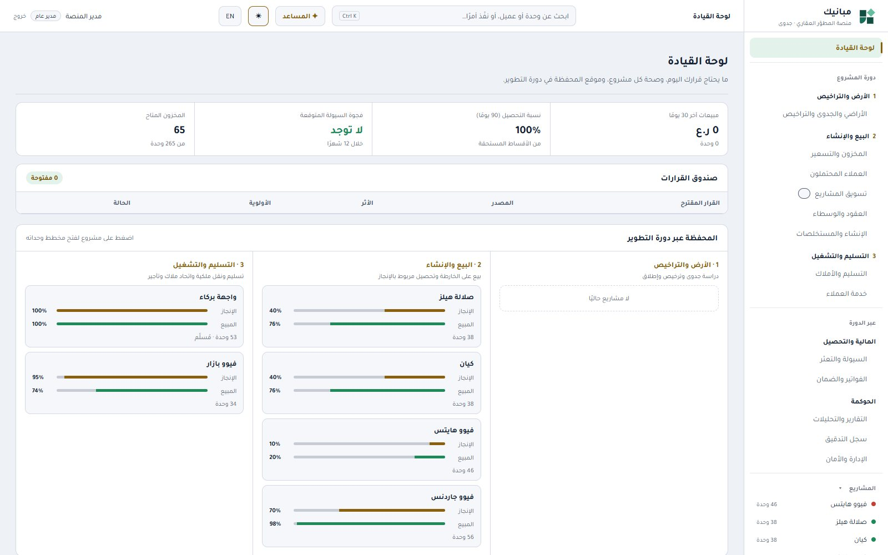
دخول آمن باسم الشركة — ودور لكل موظف
يختار المستخدم المطوّر «رؤية العقارية» ثم يدخل بكلمة المرور أو بحساب Google الخاص بالشركة. لا يُنشأ حساب من الخارج أبدًا: الهوية تُطابَق على حساب قائم أنشأه مدير النظام. حسابات تجربتكم أربعة: الرئيس التنفيذي، المبيعات والحجوزات، المالية والتحصيل، المشاريع والإنشاء — كل دور يرى ما يخصه.
- بيانات الشركة معزولة بصفوفها على مستوى قاعدة البيانات (RLS) عن أي مطوّر آخر على المنصة.
- تحقق ثنائي (TOTP) برموز استرداد، جلسات بأجهزتها وإمكانية إنهائها عن بُعد، وقفل متدرّج ضد التخمين.
- تغيير كلمة المرور إلزامي عند أول دخول، فلا يعرفها غيركم.
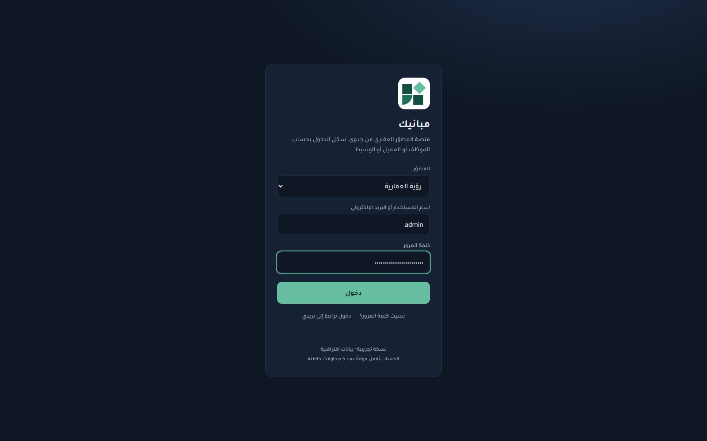
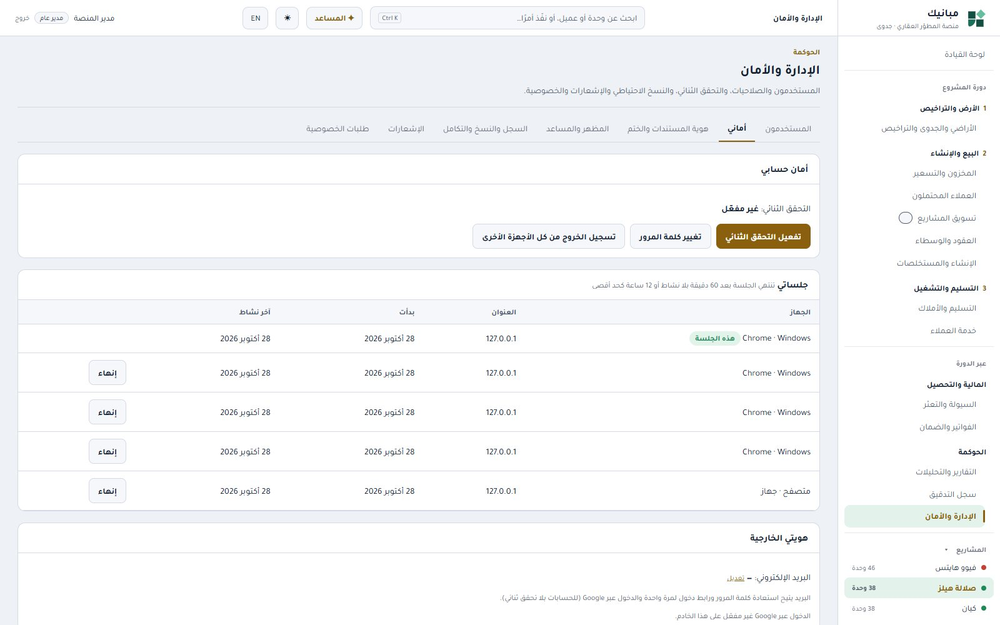
المشاريع الستة في شاشة واحدة — الإنجاز والمبيعات لكل مشروع
اللوحة ترتّب كل مشروع في مرحلته من الدورة، وتعرض له شريطين: الإنجاز (من «الحالة» المنشورة) والمبيع (من النسبة المنشورة) وعدد وحداته. واجهة بركاء — مكتملة ومباعة 100٪ — في «التسليم والتشغيل»، والخمسة الباقية في «البيع والإنشاء». مؤشرات المبيعات خلال 30 يومًا صفر بصدق لأن بياناتكم لا تحوي تاريخ بيع كل وحدة؛ وتمتلئ فور تسجيل أول حجز من المنصة.
- 265 وحدة: واجهة بركاء (53)، صلالة هيلز (38)، كيان (38)، فيوو هايتس (46)، فيوو بازار (34)، فيوو جاردنس (56).
- المتاح للبيع 65 وحدة، أكثرها في فيوو هايتس (37) ثم صلالة هيلز وكيان وفيوو بازار (9 لكلٍّ، و9 في بازار).
- «التسليم» تظهر شرطة لأن مواعيد التسليم لم تُنشر؛ وصندوق القرارات فارغ لأن لا حجوزات ولا مستخلصات بعد.
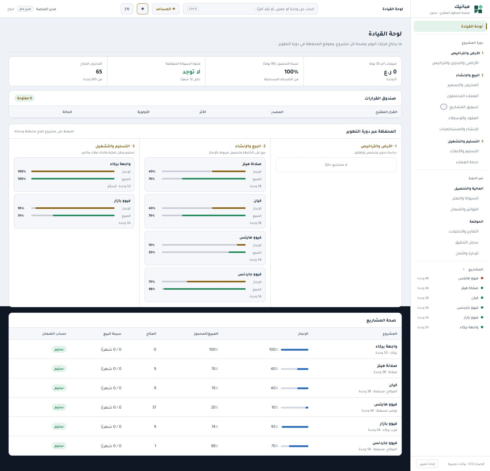
صلالة هيلز: 38 وحدة على مخطط حي — المباع داكن والمتاح فاتح
مخطط المشروع يرسم كل وحدة خلية: الشقق (24)، والمحلات (13)، والوحدة التي لم يُحدَّد نوعها في موقعكم. لأن أرقام الطوابق لم تُنشر، رُتِّبت الوحدات في أشرطة بحسب النوع بدل اختراع طوابق. الداكن مباع والفاتح متاح (والذهبي محجوز عند وجود حجز)، والضغط على أي خلية يفتح بطاقتها.
- حسب النسبة المنشورة (76٪): 29 وحدة مباعة و9 متاحة — 19 شقة و10 محلات مباعة، و5 شقق و3 محلات ووحدة متاحة.
- الجدول السفلي «أداء الشرائح» يعدّ لكل نوع الإجمالي والمتاح؛ وعمودا الطلب والتوصية يمتلئان عند وجود مبيعات مسجَّلة بتواريخها.
- رموز الوحدات مؤقتة (SLH-A-05) حتى تصلنا أرقامكم الفعلية، فتُستبدل بخطوة استيراد واحدة.

وحدة مباعة ووحدة متاحة — وما يظهر لكل منهما
بطاقة الوحدة تفتح من المخطط: النوع والمساحة والسعر وسعر المتر، وأزرار الإجراء. وحدة متاحة تعرض «حجز الوحدة لعميل» و«عرض سعر»، ومباعة تعرض مشتريها وجدول أقساطه (انظر القسم الثاني). المساحة والسعر «غير مزوَّدين» لأنهما لم يُنشرا — وأي محاولة لعرض سعر أو حجز قبل تحديد السعر تُرفض برسالة واضحة لا بخطأ.
- الوحدة المباعة (يسار) بلا مشترٍ مسجَّل لأن موقعكم لا ينشر المشترين؛ ما إن يُدخَل سجل المبيعات حتى تظهر هنا هوية المشتري وخطة الدفع والمسدَّد.
- الوحدة المتاحة (يمين) جاهزة للحجز بمجرد تسعيرها: يُحدَّد السعر من شاشة المخزون أو بالاستيراد.
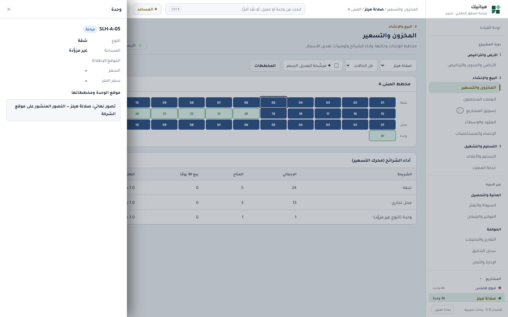
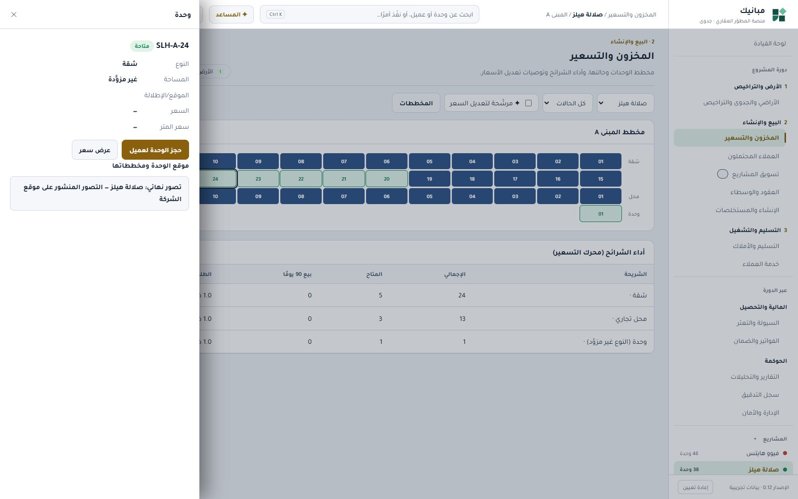
فيوو هايتس وواجهة بركاء: أقل المشاريع مبيعًا وأكملها
فيوو هايتس (بوشر، 9 طوابق، إنجاز 10٪) هو أقل مشاريعكم مبيعًا: 9 وحدة من 46 (20٪) — 45 مكتبًا وصالة عرض، 37 منها متاح. وواجهة بركاء (2023، 100٪) مكتملة ومباعة: 53 وحدة كلها داكنة — 45 مكتبًا و8 محلات، وفيها 18 موقفًا.
- الفرق بين المشروعين على الخريطة هو ما يعرفه الفريق بالحدس اليوم: أين يتركّز المتاح، وأي نوع بقي.
- المواقف (18 في واجهة بركاء وفي فيوو جاردنس) والمرافق المنشورة تُحفظ في صفحة المشروع لا كوحدات، كما في مصدركم.
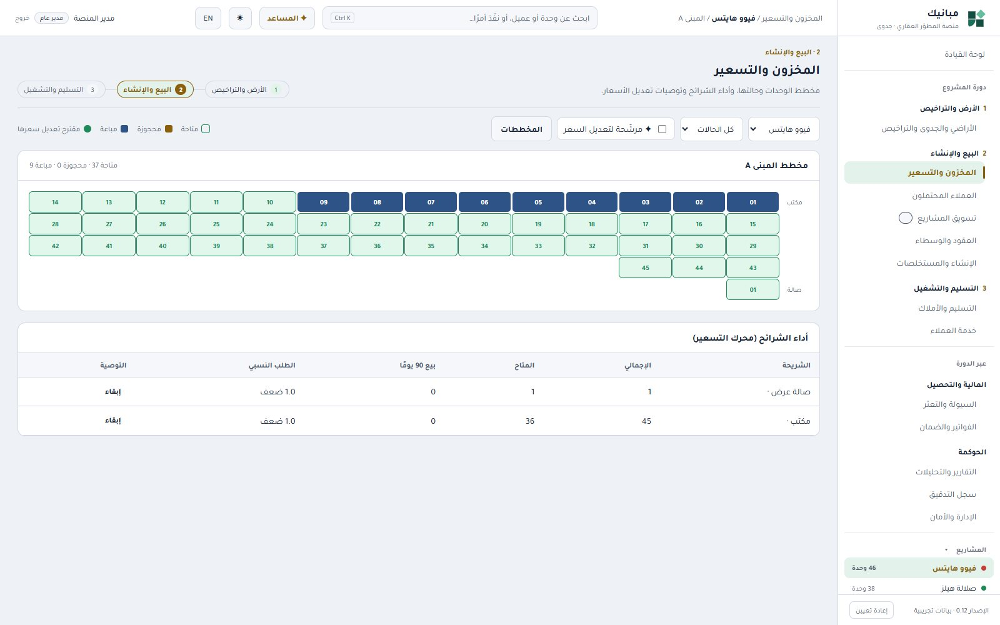
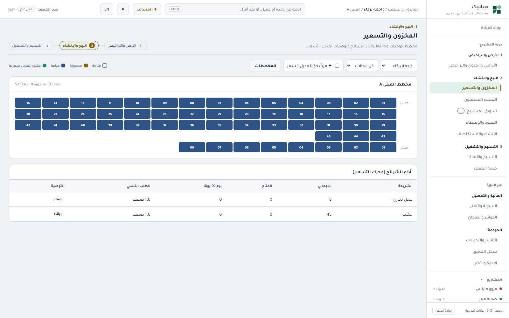
فيوو جاردنس وفيوو بازار وكيان
فيوو جاردنس (الموالح، 5 طوابق، إنجاز 70٪): 55 من 56 وحدة مباعة — 45 شقة و11 محلًا، المتاح وحدة واحدة. فيوو بازار (قرب بركاء، طابق واحد، إنجاز 95٪): 25 من 34 — 32 محلًا وصالة عرض. وكيان (الموالح، 5 طوابق، إنجاز 40٪): 29 من 38 — بأرقام مطابقة لصلالة هيلز كما نُشرت على الموقع.
- النسبة في المنصة قد تختلف نقطة عن النسبة المنشورة (جاردنس 98٪ بدل 99٪، وبازار 74٪ بدل 75٪) لأن الوحدات أعداد صحيحة — تُصحَّح عند وصول سجل المبيعات.
- صفحتا صلالة هيلز وكيان على موقعكم تحملان الأرقام نفسها (38 وحدة، 76٪، 40٪)؛ حمّلناهما كما نُشرتا وأدرجنا ذلك في بنود «ما ينقص» للتأكد.
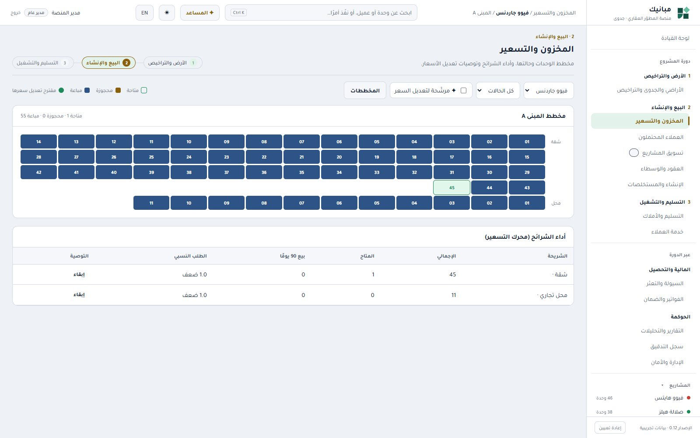
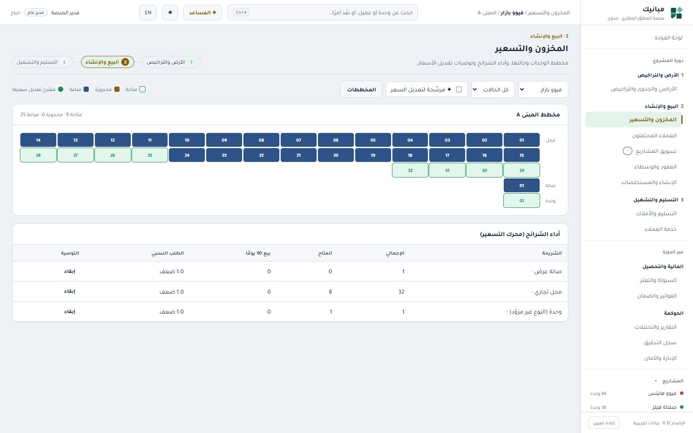
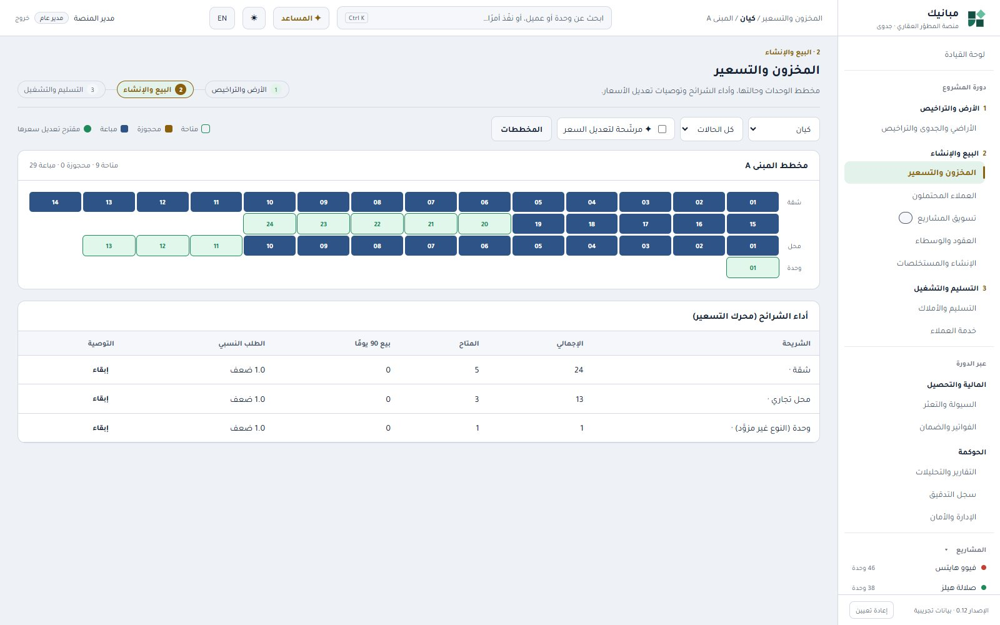
تصور كل مشروع كما نشرتموه — داخل صفحة المشروع
رُفع لكل مشروع التصور المنشور على موقعكم (مقصوصًا فوق مستوى الشارع بلا أشخاص، وفق قاعدة المنصة)، ويُعرض في زر «المخططات» بجانب مخططات الطوابق ونماذج الوحدات حين تتوفر. كل مخطط يُوسم بنوعه (موقع، طابق، نموذج وحدة، واجهة، تصور) ويُحدَّد عليه موضع كل وحدة بالضغط، فيرى المشتري وحدته على مخطط طابقها.
- مخططات الطوابق ونماذج الوحدات لم تُنشر في موقعكم؛ ما إن تصلنا حتى تُرفع وتُوسَم وتُربط بالوحدات.
- خيار «يراه العملاء» يتحكم فيما يظهر في تطبيق المشتري وما يبقى داخليًا.
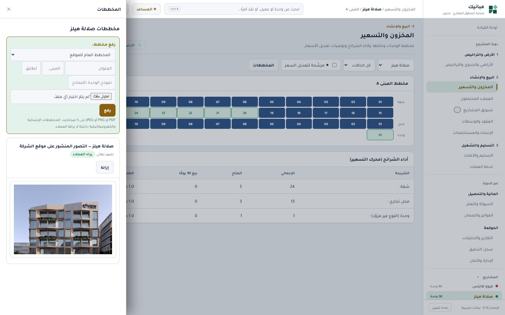
من وحدة متاحة إلى حجز — بخطوات تُحتجز فيها الوحدة 72 ساعة
المساعد الذكي يشرح الخطوات من داخل المنصة (يمين): افتح المخزون، اختر الوحدة، اضغط «حجز الوحدة لعميل» وأدخل الاسم والهاتف واختر خطة الدفع (مربوطة بالإنجاز، أو 60/40، أو مرابحة)، فتُحتجز الوحدة 72 ساعة حتى تؤكد المالية الدفعة الأولى. ثم يمرّ الحجز بتحقق هوية المشتري (KYC) وإصدار العقد — الشاشة التي ترونها (يسار) فارغة اليوم لأن موقعكم لا ينشر مشترين، لا لأن الميزة غير جاهزة.
- الوحدة المحتفظ بها للتأجير لا تُحجز للبيع وإن ظهرت متاحة؛ والوحدة بلا سعر لا تُحجز (رسالة واضحة).
- إن لم تؤكَّد الدفعة خلال 72 ساعة عادت الوحدة متاحة تلقائيًا وأُلغي الحجز.
- الحجز بخطة «مرابحة» لا يحمل أي فائدة: التمويل الإسلامي وحده.
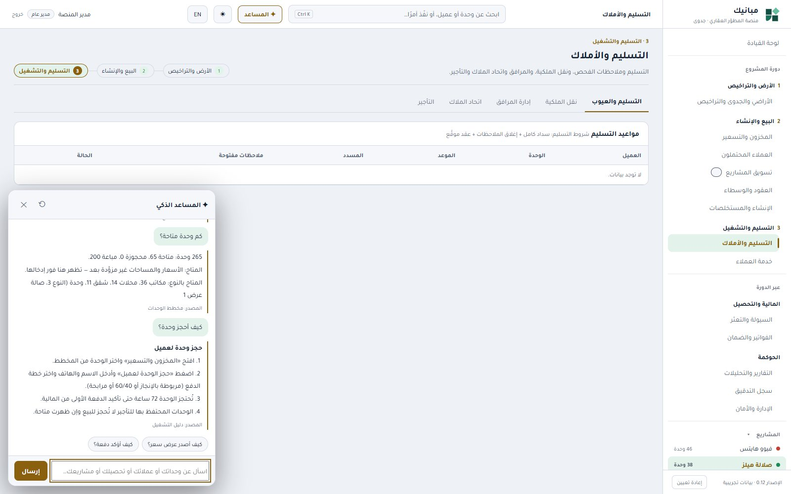
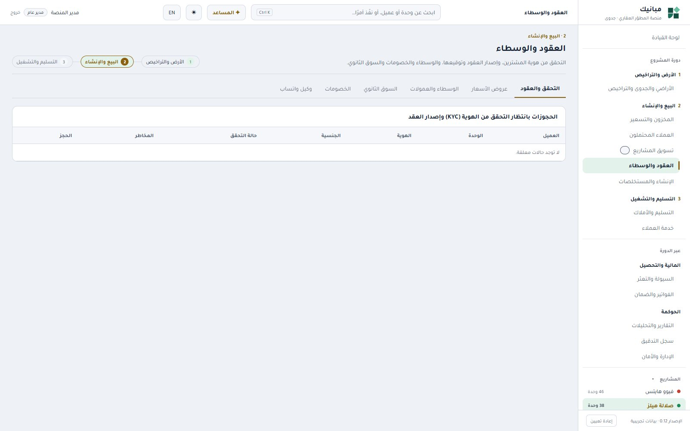
الحجز في بيئة العرض: وحدة محجوزة ومشترٍ بجدول أقساطه
من هنا تبدأ لقطات بيئة العرض العامة (جدوى) ببيانات افتراضية لا تخص رؤية — نعرض بها كيف ستبدو شاشاتكم حين تُدخلون مشتريكم. الأول: مخطط برج فيه وحدات مباعة (أزرق) ومحجوزة (ذهبي) ومتاحة، وبطاقة وحدة محجوزة.
- الوحدة المحجوزة تحمل مؤقّتًا يُنهي الحجز تلقائيًا إن لم تُسدَّد دفعته.
- الرمز الأخضر على الخلايا ينبّه إلى وحدات يقترح محرك التسعير تعديل سعرها بحسب الطلب.
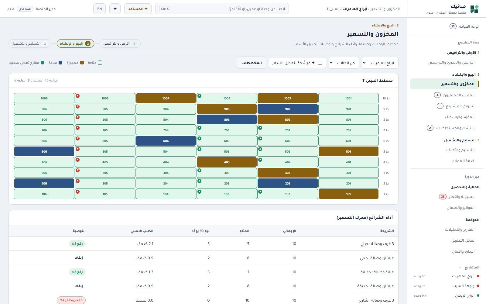
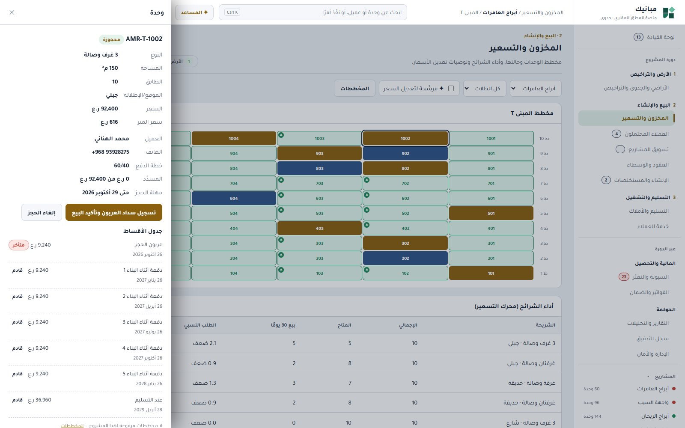
التحقق من الهوية ثم العقد — وسطر لكل حجز بمخاطره
كل حجز ينتظر تحقق هوية المشتري (KYC) قبل إصدار العقد: الاسم، الوحدة، الهوية (مخفية إلا آخر أربعة أرقام)، الجنسية، حالة التحقق، ومستوى المخاطر. تُراجع المالية الحالة ثم يُصدَر عقد البيع PDF بترويستكم وبصمة ورمز تحقق، ويوقّعه الطرفان. الحالات المعلَّقة بمستوى مخاطر مرتفع تذهب إلى «عناية معزَّزة» قبل أي عقد.
- العقد يحمل بند الصيغة الشرعية ويخلو من أي فائدة؛ وغرامة التأخير تُحوَّل إلى «تبرع» لا إيراد (شرط التبرع).
- الوسطاء يُسجَّلون بصلاحيات وتُحتسب عمولاتهم عند تحقق شروطها؛ وعروض الأسعار تحمل رمز تحقق ورابط مشاركة.
- هذه الشاشات فارغة في بياناتكم (لقطتا الوسطاء وعروض الأسعار أدناه)، وممتلئة في بيئة العرض (اليمين).
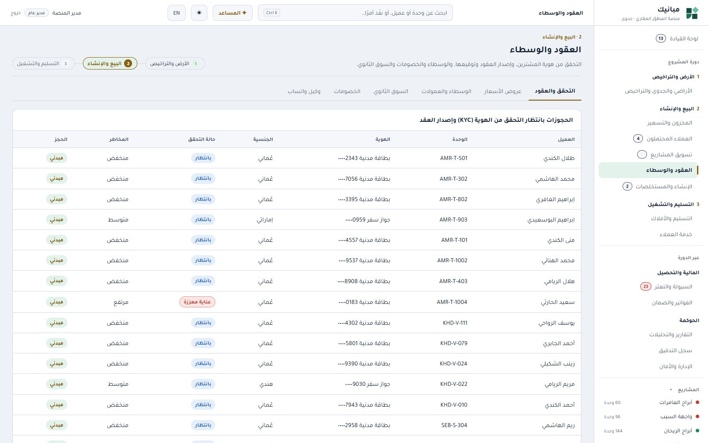
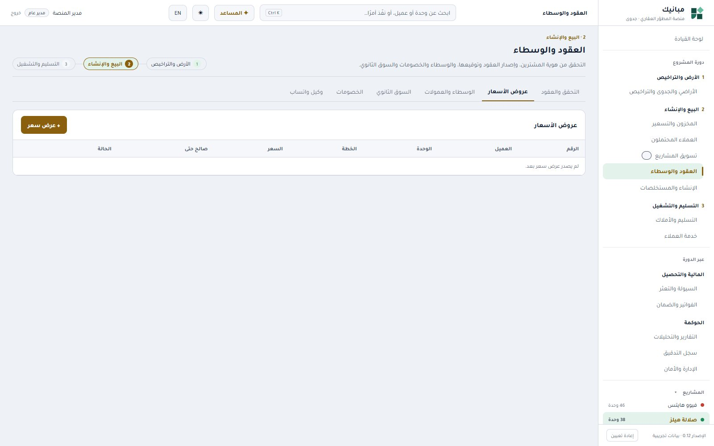
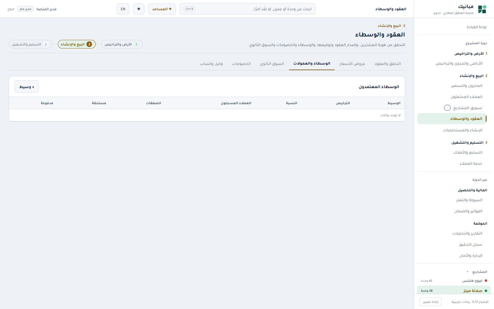
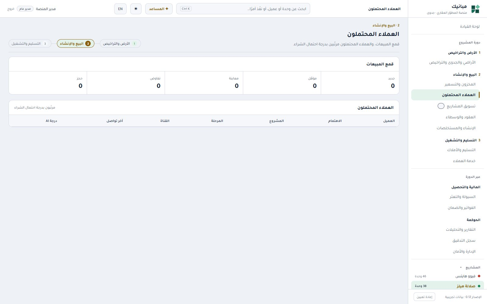
جدول الأقساط: عربون ثم دفعات مربوطة بالإنجاز ثم دفعة التسليم
عند تأكيد الحجز يولّد النظام جدول أقساط المشتري بحسب الخطة المختارة: مربوطة بالإنجاز (عربون 10٪ ثم ست دفعات)، أو 60/40، أو مرابحة بتمويل البنك عند التسليم. بطاقة الوحدة المباعة تعرض الجدول كله: المدفوع بتاريخه والقادم بتاريخه، ومستندات الحجز تُرسَل PDF أو بريدًا أو واتساب. كل قسط مسدَّد يقابله صف في دفتر المدفوعات وفاتورة بترويستكم.
- لا فوائد: التأخير يُحسب شرط تبرع لا إيراد، وتعديل الجدولة يمرّ بموافقة.
- فاتورة وإيصال لكل دفعة، بالرقم الضريبي حين يُزوَّد، وتحقق عام برمز QR بلا بيانات شخصية.
- في بياناتكم لا أقساط اليوم؛ فور استيراد سجل المبيعات (أو أول حجز من المنصة) تمتلئ هذه الشاشة.
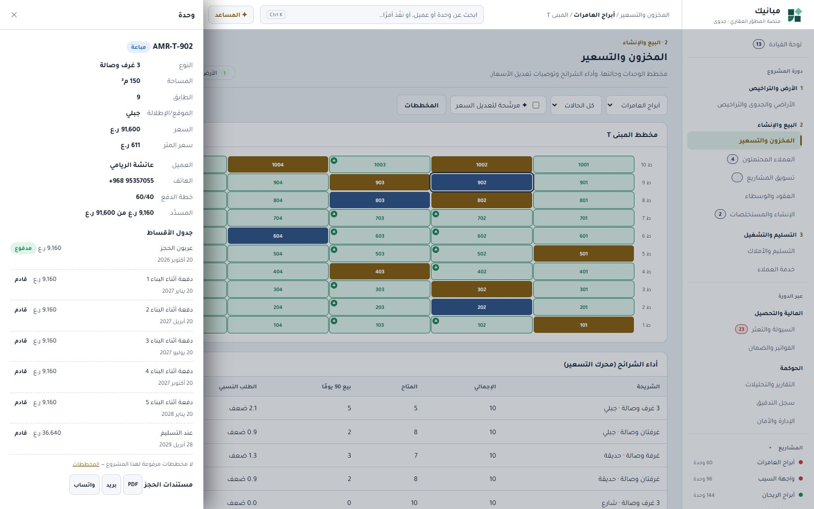
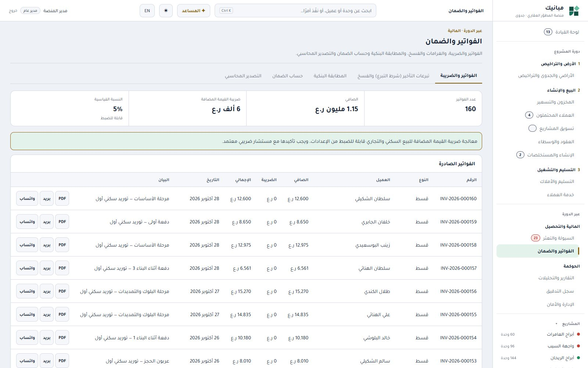
الإنشاء والمستخلصات: لا تُصرف دفعة قبل التحقق من نسبة الإنجاز
المقاول يرفع مستخلصه بنسبة إنجاز، والمهندس يتحقق منها قبل الصرف: المعلن مقابل المتحقق، والمطلوب صرفه، ومحجز ضمان حسن التنفيذ. تحت المستخلصات الجدول الزمني (جانت) والمسار الحرج، وأوامر التغيير، والميزانية، وملاحظات عدم المطابقة (NCR). في بياناتكم لا مقاول ولا مستخلصات بعد، فالشاشة فارغة (ومؤشر الجدول «1 ضمن الخطة» قيمة افتراضية حتى يُدخَل جدول زمني — لا يُقرأ أداءً فعليًا).
- نسب إنجاز مشاريعكم المنشورة (10٪ إلى 100٪) محفوظة في بطاقة كل مشروع وتظهر في لوحة القيادة.
- مستخلص بنسبة تتجاوز المتحقق يُعلَّم بالأحمر (55٪ مقابل المتحقق في اللقطة) ولا يُعتمد.
- المقاولون وعقودهم والجدول الزمني بانتظار بياناتكم.
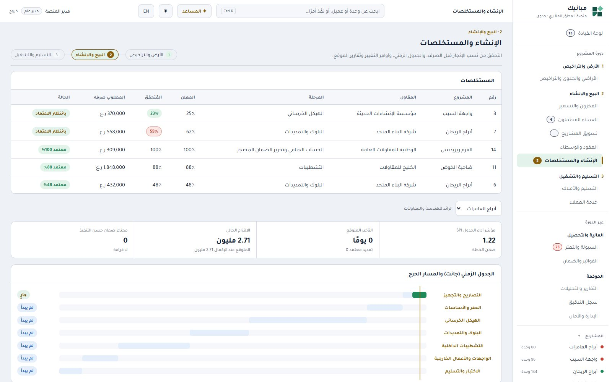
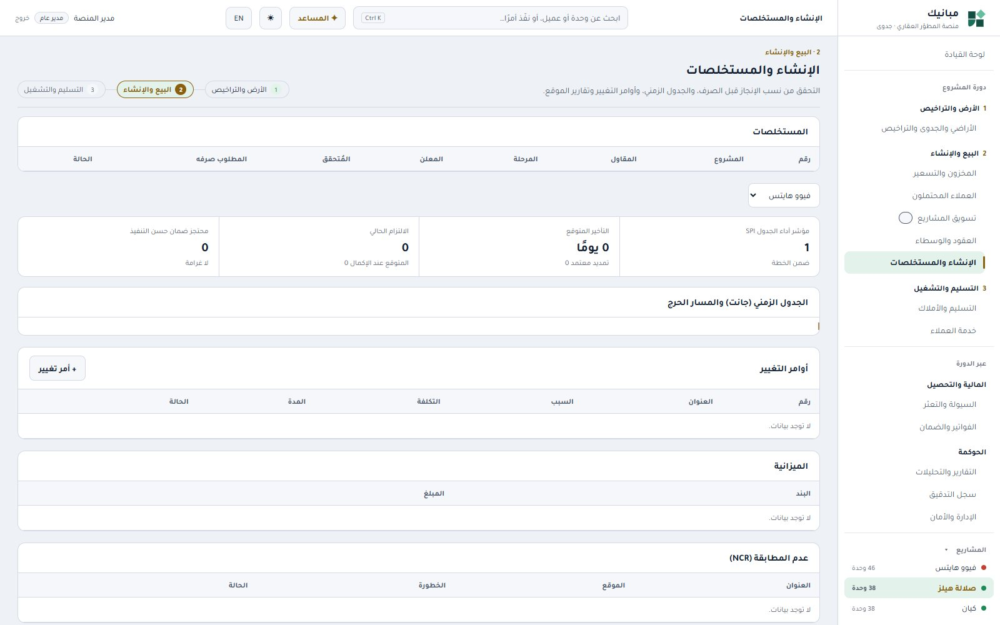
رادار السيولة وحساب الضمان — قبل أن يظهر العجز
رادار السيولة يتوقع أرصدة حسابات الضمان لاثني عشر شهرًا ويُنبّه مبكرًا إلى أي مشروع سيدخل العجز (في بيئة العرض: «واجهة السيب» في فبراير 2027) ويقترح معالجة، ويعرض العملاء المعرَّضين للتعثر بنسبة خطر وإجراء مقترح. وحساب الضمان لكل مشروع يعرض الموردات (دفعات المشترين) والمصروف على المستخلصات المعتمدة والرصيد.
- في بياناتكم الرادار مسطَّح عند صفر (لا دفعات ولا مستخلصات) فيعلن أن «لا فجوة سيولة متوقعة» — وهو صادق لا متفائل.
- الاستيراد المصرفي والمطابقة البنكية ومخرجات المحاسبة بصيغة ERPNext في «الفواتير والضمان».
- تبرعات التأخير تُعرض بنداً مستقلًا يُصرف في وجوه الخير حسب مستشاركم الشرعي.
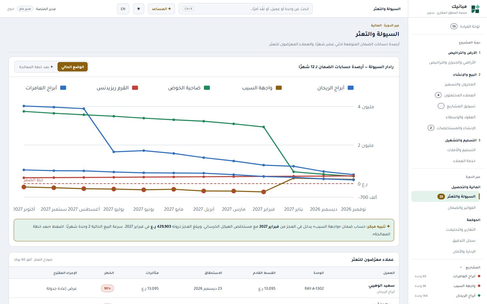
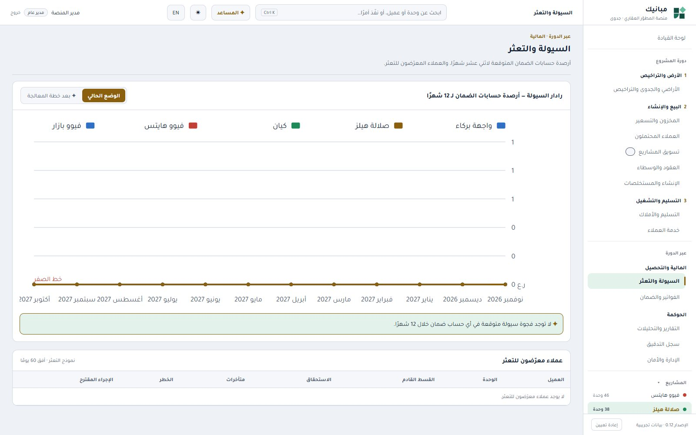
التسليم: مواعيد وملاحظات عيوب وإغلاق بتوقيع
حين يقترب مشروع من التسليم تُجدول مواعيد التسليم لكل مشترٍ: سداد كامل، وإغلاق الملاحظات، وعقد موقَّع، ثم نقل الملكية واتحاد الملاك. في واجهة بركاء (المباعة المكتملة) هذه الشاشة ستكون أول ما يُستعمل حين يُدخَل سجل مشتريها.
- كل موعد يعرض ملاحظات العيوب المفتوحة، فلا يُسلَّم عقار بشروط ناقصة.
- نقل الملكية واتحاد الملاك وخدمة العملاء بعد التسليم في الشاشة نفسها.
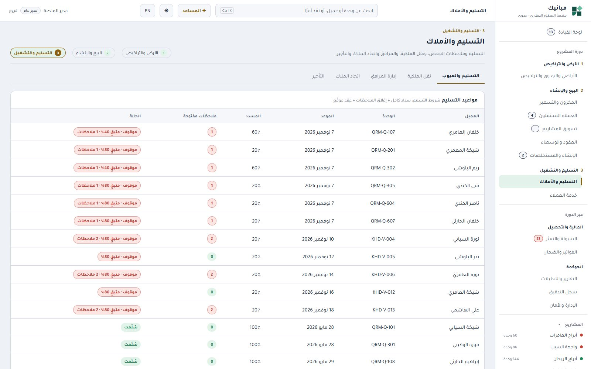
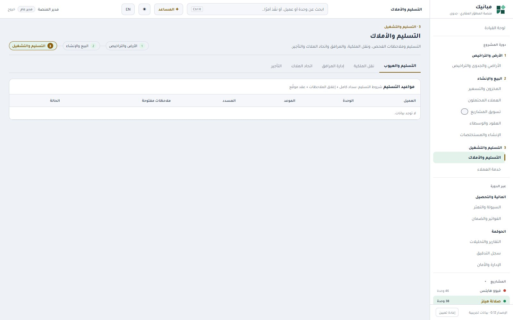
اسألوا المنصة عن محفظتكم — فتجيب من بياناتكم الحية
المساعد (✦ في الشريط العلوي) يجيب عن أسئلة المخزون والمبيعات والتحصيل والإنشاء من قاعدة بياناتكم مباشرة، ويذكر مصدر كل رقم. يعمل بمحرك محلي داخل المنصة دون إرسال بياناتكم إلى أي خدمة خارجية، ويمكن ربطه بنموذج لغوي اختياريًا.
- «ما ملخص المحفظة؟» ⟵ المشاريع الستة بإنجازها ونسبة مبيعها وعدد المتاح — كما في اللقطة.
- «كم وحدة متاحة؟» ⟵ 265 وحدة: متاحة 65 ومباعة 200، مع توزيع المتاح بالنوع (مكاتب 36، محلات 14، شقق 11…) والأسعار «غير مزوَّدة بعد».
- يقترح أسئلة تالية ويشرح كيف تُنفَّذ المهام (كيف أحجز وحدة؟).
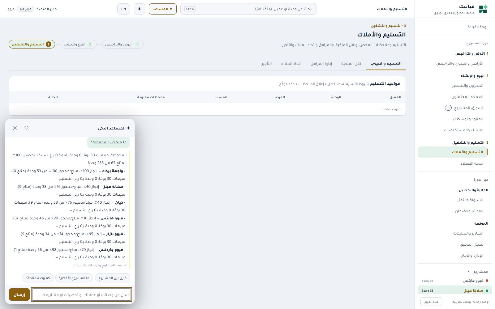
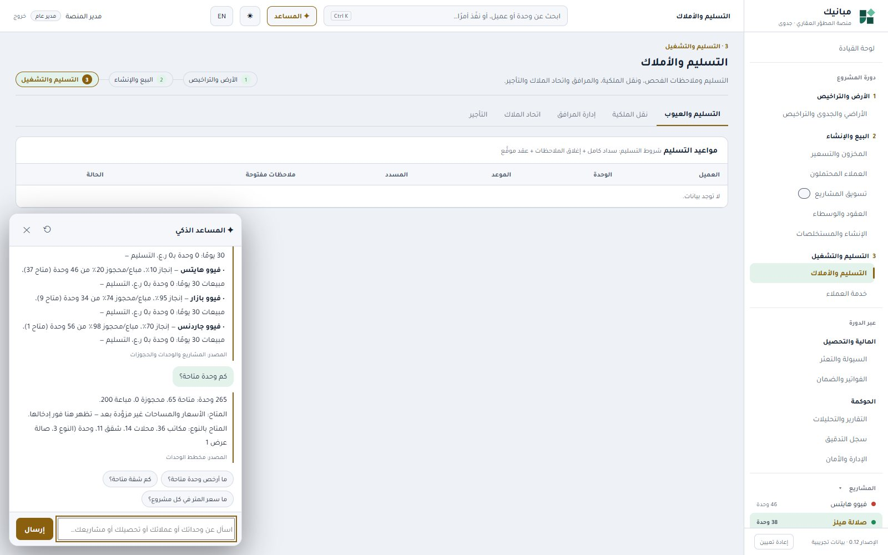
تقرير بترويستكم بضغطة — ومنشئ تقارير بلا SQL
تقارير جاهزة (المحفظة، المبيعات، التحصيل، السيولة، المخزون والتسعير وغيرها) بمعاملات ورسوم، تُصدَّر PDF بترويسة الشركة وشعارها أو CSV، وتُجدول بالبريد. ومنشئ تقارير على بيانات معتمدة بفلاتر وتجميع ورسوم لمن أراد تقريرًا على مقاسه — مثل مبيعات كل مشروع بحسب النوع.
- التقرير المرفق «لوحة المحفظة» صدر من المنصة بترويسة رؤية وشعارها: 265 وحدة والمشاريع الستة بنسب مبيعها وإنجازها.
- تقرير «المخزون والتسعير» يعرض أداء الشرائح لكل نوع وتوصيات تعديل السعر حين تتوفر أسعار ومبيعات بتواريخها.
- الرسوم تُرسم داخل المنصة وفي PDF بالمحرّك نفسه، بلا مكتبة خارجية.
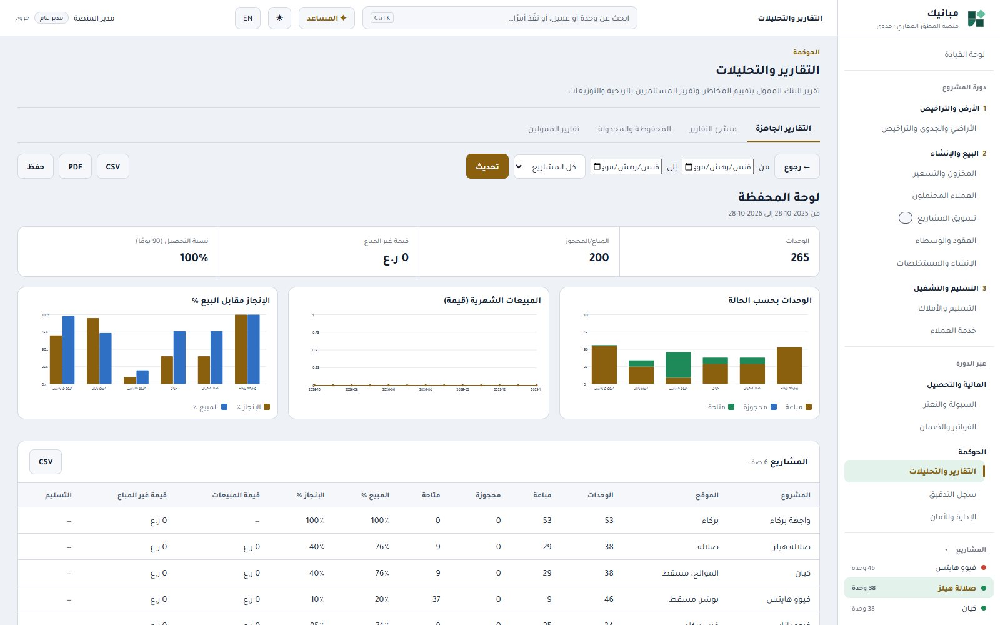
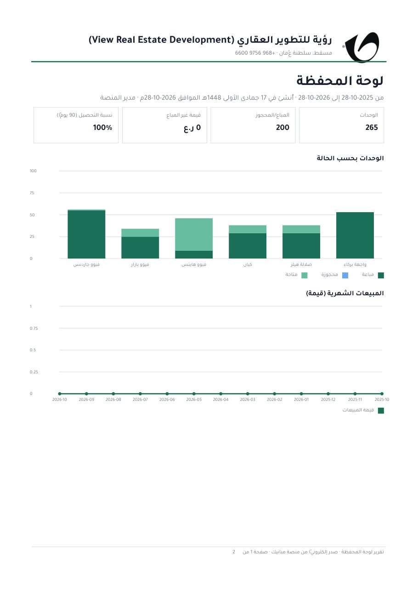
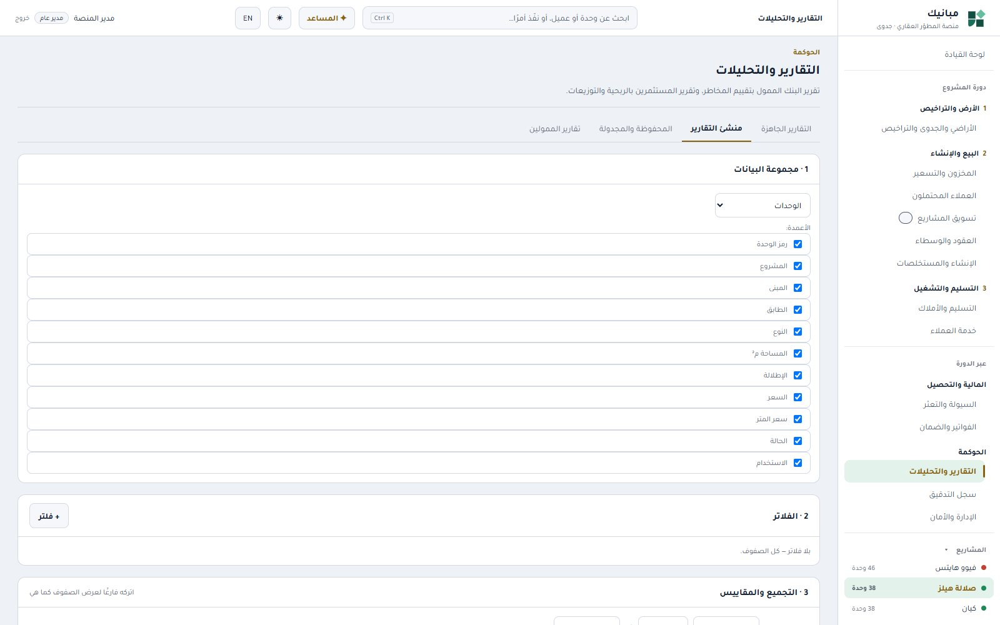
لوحة التسويق تقرأ مشاريعكم — والاستوديو ينتظر صورها وأسعارها
لوحة التسويق تصنّف كل مشروع من بياناته الحية: «مُباع بالكامل» لواجهة بركاء، و«شبه مكتمل» لفيوو جاردنس، و«قيد البيع» لما بقي، وتعرض لكل مشروع وتيرة بيعه واقتراحاته: حملة جديدة، إعلان، تقرير مبيعات. حملات بعرض غير ربوي، وعملاء محتملون برمز تتبع لكل حملة.
- استوديو الإعلانات (ستة قوالب بثلاثة مقاسات، نص عربي مركَّب برمجيًا) يحتاج سعرًا وموعدًا لمعظم قوالبه؛ لم نُنتج إعلانًا لأن سعر الوحدات غير منشور — وهذا من بنود «ما ينقص».
- الوسطاء يُسجَّلون بصلاحيات وعمولاتهم تُحتسب عند تحقق شروطها.
- التنبيهات التسويقية تُسجَّل يوميًا من حركة السوق حين تبدأ دورة البيع.
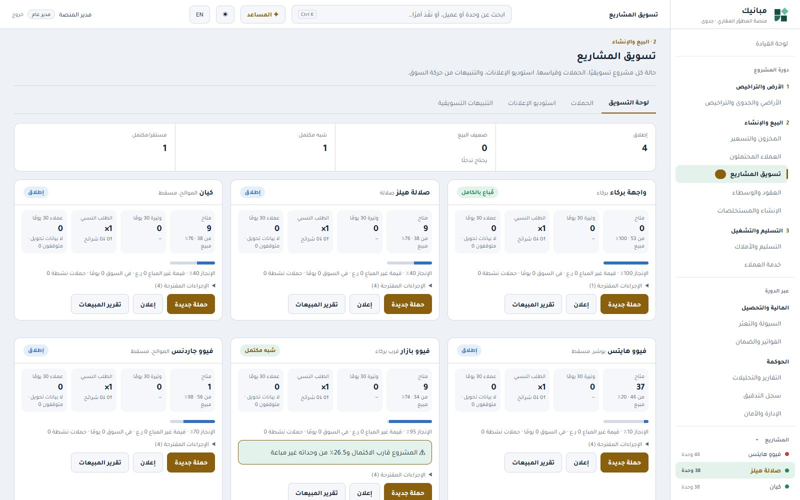
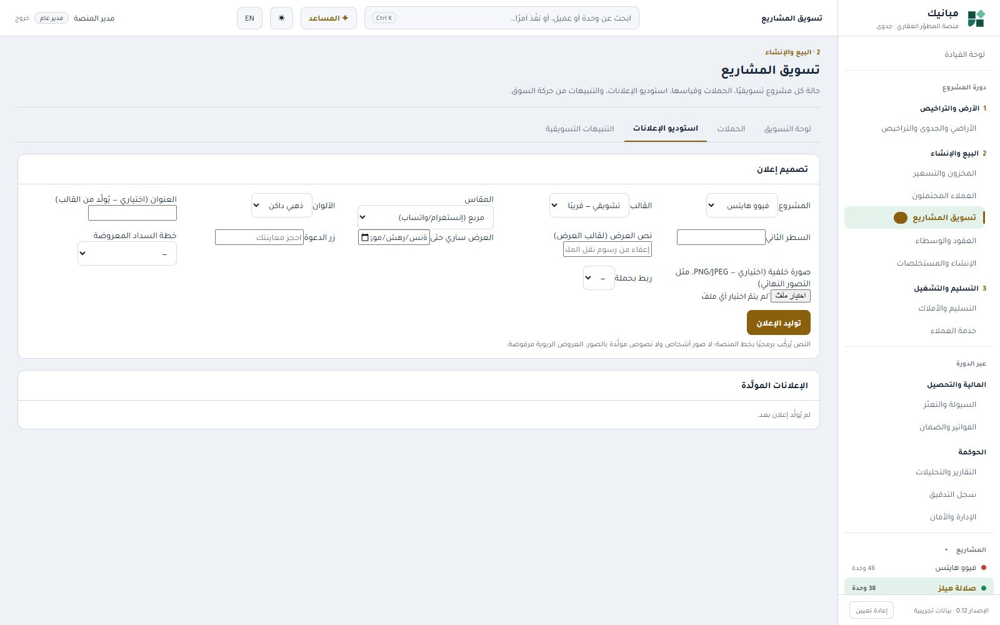
سجل تدقيق لا يُمحى، وهوية المستندات بشعاركم
كل فعل في المنصة — حجز، عقد، تحصيل، تعديل — سطر في سجل تدقيق مسلسل ببصمة لا يستطيع أحد تعديله؛ البيانات الشخصية مشفّرة في القاعدة؛ وكل كيان معزول بصفوفه على مستوى قاعدة البيانات.
- المستخدمون والأدوار: إضافة، تعديل البريد، إنهاء الجلسات، إعادة ضبط التحقق الثنائي.
- هوية المستندات والختم: اسم الشركة وشعارها ورقم واتساب منشورة (+968 9756 6600) مسجَّلة؛ البريد والسجل التجاري والرقم الضريبي واسم الموقِّع والختم فارغة حتى تزوّدونا بها.
- صفحة تحقق عامة لكل مستند يصدر (عقد، فاتورة، إيصال) برمز QR دون كشف بيانات شخصية.
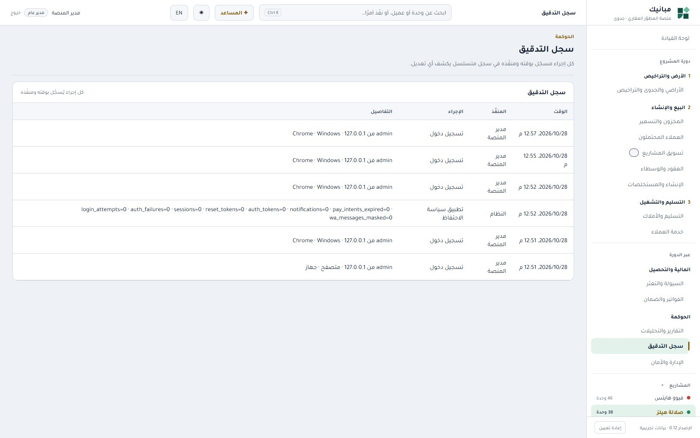
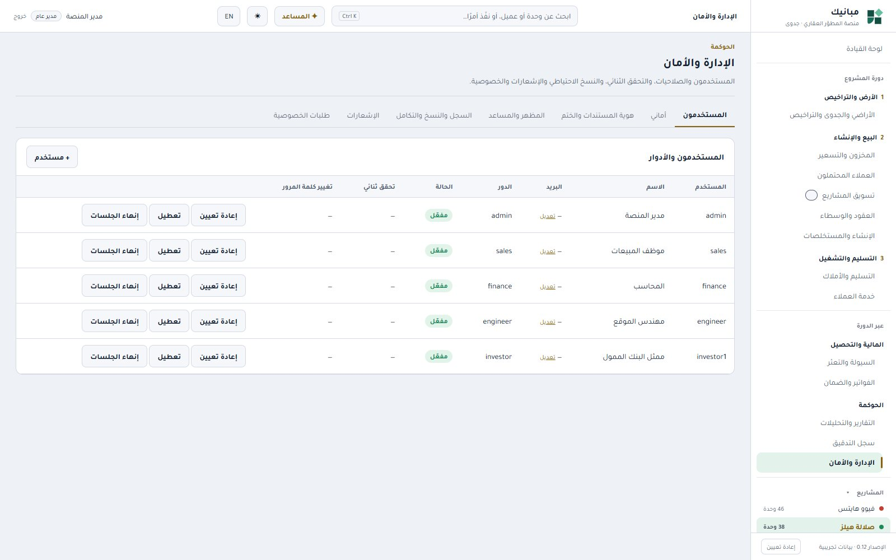
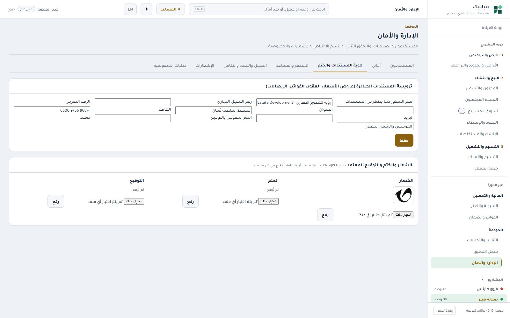
ما ينقص لإكمال الصورة — نستلمه في الاجتماع
كل ما في المنصة اليوم من موقعكم وحده. لتكتمل المحفظة ويبدأ الفريق البيع والإنشاء والتحصيل فعليًا نحتاج من الشركة:
- أرقام الوحدات ومساحاتها وطوابقها لكل مشروعقائمة واحدة (المشروع، المبنى، الطابق، رقم الوحدة، النوع، المساحة) تستبدل الرموز المؤقتة وترسم المخطط على طوابقه.
- الأسعار وخطط الدفعسعر كل وحدة أو سعر المتر لكل نوع، وخطط الدفع المعتمدة (مربوطة بالإنجاز، 60/40، مرابحة) — بهما يبدأ الحجز وعروض الأسعار والعقود والإعلانات.
- سجل المبيعاتلكل وحدة مباعة: المشتري، تاريخ البيع، السعر، خطة الدفع، والمدفوع حتى اليوم — لتظهر الأقساط والتحصيل والمتأخرات، وتُصحَّح نسب المبيع.
- مواعيد التسليم ومعنى «الحالة»هل «الحالة» نسبة إنجاز إنشائي كما قرأناها؟ وما موعد التسليم المعتمد لكل مشروع؟
- المقاولون والمستخلصات والجدول الزمنياسم المقاول وعقده ونسبه المعتمدة والمستخلصات الصادرة — لتعمل شاشة الإنشاء وحساب الضمان.
- التحقق من بيانات صلالة هيلز وكيانصفحتاهما على الموقع بالأرقام نفسها (38 وحدة، 76٪، 40٪) والوحدات المفصَّلة 37 لا 38؛ وفيوو بازار 33 من 34 — نحتاج التأكد من النوع والعدد الفعليين.
- المواقف والمرافقواجهة بركاء وفيوو جاردنس 18 موقفًا لكلٍّ؛ وقائمة المرافق لكل مشروع — لتُحفظ في صفحة المشروع.
- بيانات الهوية والتواصلالبريد الرسمي، السجل التجاري، الرقم الضريبي، اسم الموقّع المعتمد، والختم والتوقيع، والشعار بدقة الطباعة (الموجود هو شعار الموقع).
- صيغة عقد البيعلإصدار عقد البيع PDF بصيغتكم المعتمدة شرعيًا وقانونيًا بدل النموذج العام.
- حساب بريد SMTP ونطاق وواتساب للأعماللإرسال العقود والفواتير وروابط الدخول من بريد الشركة؛ اليوم البريد في وضع «صندوق صادر» وواتساب عبر روابط يدوية.
- تخزين دائم للمرفقاتعقود المشترين والمخططات الممسوحة تحتاج تخزينًا دائمًا (Volume أو S3) قبل أول استعمال فعلي.
صيغتا التعاون
تُترك الأرقام للاجتماع. الفرق الجوهري بين الصيغتين: من يشغّل، ومن يملك، وكيف تصل التحديثات.
| الوجه | اشتراك على منصة جدوى المستضافة | نسخة خاصة على بنية الشركة |
|---|---|---|
| الملكية | ترخيص استخدام؛ الشيفرة والتشغيل لدى جدوى | نسخة مرخَّصة تُنشر على خوادم الشركة (Docker + PostgreSQL) |
| العزل والبيانات | كل كيان معزول بصفوفه (RLS) على قاعدة مشتركة؛ البيانات ملك الشركة وتُصدَّر عند الطلب | قاعدة بيانات خاصة بالكامل داخل بنية الشركة |
| الكيانات المتعددة | مطوّر لكل كيان في المجموعة على الاشتراك نفسه | مطوّر لكل كيان داخل النسخة الخاصة |
| التحديثات | مستمرة وتلقائية مع كل إصدار | بحسب اتفاق الصيانة؛ تُطبَّق على نسخة الشركة |
| النسخ الاحتياطي | يومي من جدوى مع تمرين استرجاع | مسؤولية فريق الشركة بدليل التشغيل RUNBOOK |
| الدعم والتدريب | ضمن الاشتراك | ضمن عقد التنفيذ والصيانة |
| الكلفة الأولية | ||
| الكلفة الدورية |
الخانات الفارغة تُملأ في الاجتماع. في الحالتين: ترخيص واحد لمطوّر واحد، والبيانات ملك الشركة، ودليل التشغيل ودليل الأمان ضمن التسليم.
ما يجب أن يُقال بصراحة
- البيانات من موقعكم العام وحده: صفحة «من نحن» وصفحات المشاريع الست (جُمعت في 28 أكتوبر 2026). لم نطّلع على أي بيانات داخلية، ولا على حساب إنستغرام. الأرقام المعلنة للشركة (+1000 عميل، 12+ سنة خبرة، 100,000+ م² مبنية) لا تدخل المنصة لأنها ليست بيانات تشغيلية.
- المباع تقدير من النسبة المنشورة لا سجل مبيعات: طُبّقت النسبة على عدد الوحدات (بالتقريب) فصار المباع 200 من 265. وأي وحدة بعينها هي المباعة مجهول؛ وُزِّع المباع على الأنواع بالتناسب. لذلك لا مشترين ولا تواريخ بيع ولا أقساط، ومؤشرات «مبيعات 30 يومًا» صفر. والنسبة في المنصة قد تخالف المنشورة بنقطة (جاردنس 98٪ بدل 99٪، وبازار 74٪ بدل 75٪).
- رموز الوحدات مؤقتة (مثل VHT-O-01): الموقع لا ينشر أرقام الوحدات ولا طوابقها ولا مساحاتها ولا أسعارها، فتظهر «غير مزوَّدة» أو «—»، ورُتِّبت الخرائط أشرطةً بحسب النوع لا طوابقَ مخترعة. وتُستبدل الرموز كلها بخطوة استيراد واحدة حين تصل قائمتكم.
- «الحالة» المنشورة (40٪، 10٪، 95٪…) قرأناها نسبة إنجاز إنشائي إلى أن تؤكدوا معناها؛ ولا مواعيد تسليم منشورة فتظهر «التسليم —».
- صفحتا صلالة هيلز وكيان على موقعكم بأرقام متطابقة (38 وحدة، 76٪، 40٪)، والوحدات المفصَّلة فيهما 37 لا 38 (وفي فيوو بازار 33 من 34): حمّلناها كما نُشرت، والوحدة المتبقية «النوع غير مزوَّد»؛ ويُرجَّح خطأ نسخ في الموقع يُتحقق منه.
- شاشات الحجز والعقود والأقساط والمستخلصات والسيولة في بياناتكم فارغة بصدق؛ ولقطات القسم الثاني من الدليل من بيئة العرض العامة ببيانات افتراضية موسومة في كل تعليق، وليست بيانات رؤية.
- بعض المؤشرات تظهر قيمتها الافتراضية حين لا بيانات (مثل مؤشر أداء الجدول «1 ضمن الخطة»)، ولا تُقرأ أداءً فعليًا. وتذييل الشريط الجانبي يحمل عبارة «بيانات تجريبية» ثابتة في كل البيئات (تُعدَّل قبل التشغيل الفعلي).
- المواقف (18 في واجهة بركاء وفيوو جاردنس) والمرافق والإحداثيات حُفظت في هذا الدليل لا كحقول في المنصة؛ ولا إعلانات في هذه الحزمة لأن الاستوديو يحتاج سعرًا وصورة بلا أشخاص.
- التصورات المرفوعة هي صور موقعكم، مقصوصة فوق مستوى الشارع لإخراج الأشخاص (قاعدة المنصة)، والشعار نسخة الموقع الرقمية؛ ومعها يحتاج الطباعة نسخةً بدقة أعلى.
- المطوّر «رؤية العقارية» جاهز في الإصدار 0.19.0 ومُتحقَّق منه على نسخة محلية معزولة؛ لم يُفعَّل بعدُ على الرابط الحي (يُفعَّل بنشر الإصدار وإضافته إلى قائمة المطوّرين). واللقطات من تلك النسخة المحلية لأن كلمة مرور بيئة العرض لا تُكتب في أي ملف.
- اكتُشف أثناء الإعداد وأُصلح: المساعد كان يفشل («خطأ داخلي») في سؤال «كم وحدة متاحة؟» لمحفظة بلا أسعار.
ما عدا ذلك يعمل اليوم على بياناتكم المنشورة، ويمكن لفريقكم تجربته بحسابات التجربة الأربعة فور التفعيل.
الخطوة التالية: جلسة عمل مع المبيعات والمالية والإنشاء
نقترح جلسة عمل لمدة ساعتين في مقر رؤية بمسقط مع مدير المبيعات والمسؤول المالي ومدير المشاريع: نراجع معًا المحفظة كما ظهرت في المنصة، نستلم القوائم الناقصة (أرقام الوحدات والأسعار وسجل المبيعات)، ونُدخل أول حجز وعقد وجدول أقساط حيًّا على وحدة حقيقية — ثم نتفق على الصيغة والجدول الزمني.
- جدوى للدراسات والتطوير — مسقط · jadwa.om
- رابط المنصة: https://mabaneek.com
- المطوّر في شاشة الدخول: «رؤية العقارية» — يُفعَّل مع حسابات التجربة الأربعة قبل الجلسة